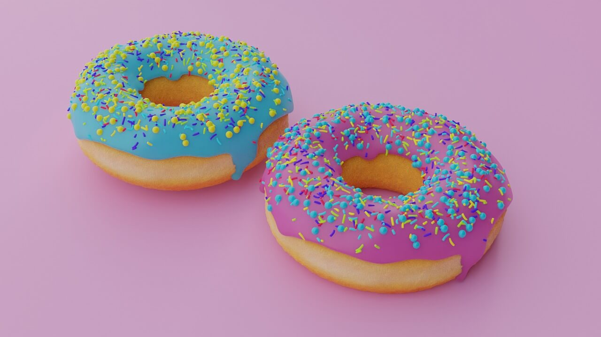

Пончики — любимая еда полицейских в Штатах. Эта любовь началась в 1960-х, когда только магазины с пончиками работали круглосуточно, поэтому полицейские могли ими перекусить во время ночных дежурств.